Sobre el proyecto
Desde 2019, el proyecto Snapshot se dedica al monitoreo global, estandarizado y de largo plazo de mamíferos terrestres de mediano y gran porte, mediante iniciativas colaborativas que integran grupos de investigación, instituciones, científicos/as y personas entusiastas de la naturaleza y la ciencia ciudadana.
Esta red internacional no solo impulsa el avance en la generación y disponibilidad de datos abiertos a gran escala, sino que también fortalece y amplía la cooperación entre equipos de investigación a nivel nacional e internacional.
Actualmente, el proyecto está presente en diversos países, incluyendo Estados Unidos, Japón, Europa y, desde 2025, también en América del Sur, con su expansión hacia Brasil y ahora hacia Paraguay.
Con Snapshot Paraguay buscamos establecer un programa de monitoreo de largo plazo que permita evaluar la biodiversidad de mamíferos terrestres y comprender cómo cambian los ecosistemas en un contexto de transformaciones ambientales y climáticas aceleradas.
A través de esta nueva red de colaboración, buscamos potenciar conexiones científicas, generar oportunidades para nuevas alianzas, involucrar más instituciones del país y fomentar investigaciones innovadoras que contribuyan a la conservación de la biodiversidad paraguaya.
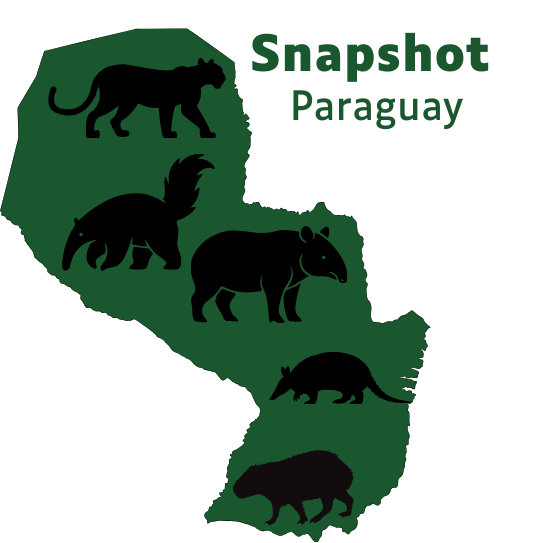
Protocolo e inscripción
Inscripción
👉 Formulario de inscripción: (poner link real después)
https://forms.gle/TU-LINK
Directrices generales
- Mínimo 60 días de muestreo.
- Entre 8 y 16 cámaras por área.
- Cámaras a 40 cm del suelo.
- Distancia entre cámaras 200 m a 5 km.
- No usar cebos o iscas.
- Mantener cámaras dentro del mismo tipo de cobertura.
Equipos recomendados
- Cámaras de activación ≤ 0,5 segundos.
- Infrarrojo (IR).
- SD 16–32 GB.
- Baterías AA recargables.
Colaboradores
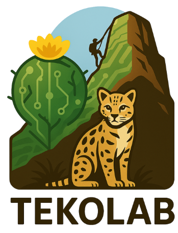
TekoLab – Cerro Kavaju
TekoLab es el laboratorio vivo de innovación socioambiental que impulsa las acciones de conservación, restauración ecológica, senderismo y escalada responsable en el Cerro Kavaju (Departamento de Cordillera).
Desde TekoLab se coordina el área piloto de Snapshot Paraguay, incluyendo:
- Instalación y mantenimiento de cámaras trampa.
- Monitoreo de mamíferos de mediano y gran porte.
- Educación ambiental y trabajo con comunidades locales.
- Apoyo a investigaciones sobre biodiversidad y uso público del cerro.
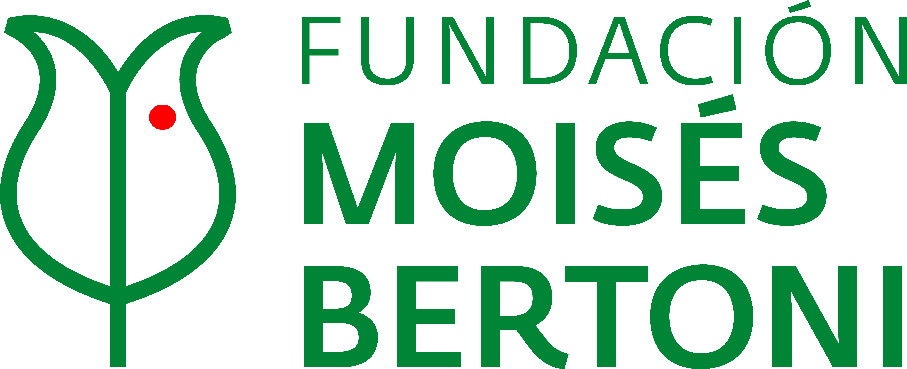
Fundación Moisés Bertoni
La Fundación Moisés Bertoni (FMB) es una asociación privada sin fines de lucro de Paraguay que trabaja en la conservación de la naturaleza y en la promoción del desarrollo sostenible, entendiendo este como la creación de valor en la triple línea de resultados: ambiental, social y económica. Su objetivo es contribuir al mejoramiento de la calidad de vida, a través de la preservación de la biodiversidad, el manejo responsable de los recursos naturales y el impulso de actividades productivas sostenibles para beneficio de las generaciones presentes y futuras.
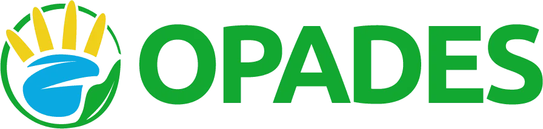
OPADES – Organización Paraguaya de Conservación y Desarrollo Sostenible
Organización sin fines de lucro que trabaja por la conservación de la biodiversidad y la promoción del desarrollo sostenible, integrando la educación ambiental, la ciencia ciudadana y el fortalecimiento de las comunidades locales como ejes de acción. Desde OPADES se impulsan iniciativas de investigación participativa y monitoreo de la fauna silvestre, promoviendo el uso de herramientas como las cámaras trampa para generar información científica que contribuya a la toma de decisiones en conservación y al conocimiento de la biodiversidad local. Busca fortalecer el vínculo entre la ciencia, la conservación y la sociedad, fomentando una participación activa de las personas en la protección del patrimonio natural del Paraguay.
OPADES apoya y coordina acciones como:
- Instalación y mantenimiento de cámaras trampa.
- Monitoreo de fauna.
- Formación de voluntarios y actores locales en ciencia ciudadana.
- Educación ambiental y sensibilización sobre la importancia de la biodiversidad.
- Generación de datos para la conservación y la gestión de áreas naturales protegidas.
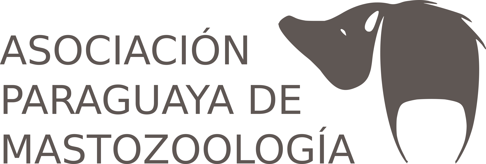
APM - Asociación Paraguaya de Mastozoología
Es una organización de la sociedad civil de Paraguay, sin fines de lucro, fundada a través de una asamblea el 02 de agosto de 2013. La asociación congrega a los profesionales y estudiantes mastozoólogos que dedican su trabajo al estudio, la investigación científica y la conservación de los mamíferos del Paraguay.
Entre sus objetivos se encuentra:
- Fomentar y promover la investigación científica en el país, contribuyendo a la difusión, comprensión e impacto de los resultados alcanzados.
- Fomentar y promover el trabajo conjunto e interdisciplinario de distintas instituciones y personas interesadas en el estudio y conservación de mamíferos en general a nivel nacional e internacional.
- Difusión del conocimiento de los mamíferos y sus roles ecosistémicos a distintos sectores de la sociedad.
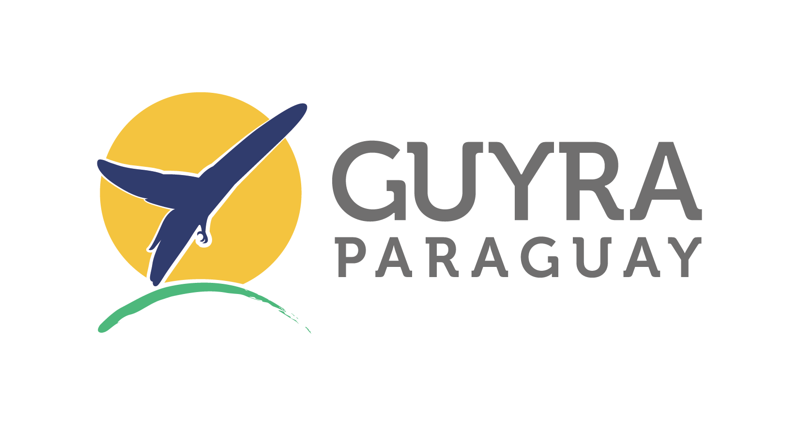
Guyra Paraguay
Es una organización de la sociedad civil sin fines de lucro que trabaja en la defensa y protección de la diversidad biológica de Paraguay y la acción organizada de la población, con el fin de asegurar el espacio vital necesario para que las futuras generaciones puedan conocer muestras representativas de la riqueza natural del Paraguay.
Cuenta con un enfoque estratégico en torno a las especies, los sitios, la sociedad, los sistemas y la ecología de paisaje, conectando a las personas con los hábitat y la biodiversidad, e integra soluciones basadas en naturaleza que promueven la restauración, el desarrollo de la investigación y un cambio en nuestro comportamiento a fin de garantizar un futuro más sostenible.
Áreas de muestreo
Estas son las áreas de muestreo actualmente activas en Snapshot Paraguay.
En esta primera versión se incluye solamente el área piloto de Cerro Kavaju.
En futuras versiones se agregarán nuevas áreas, ecorregiones, número de cámaras y otros indicadores.
Galería
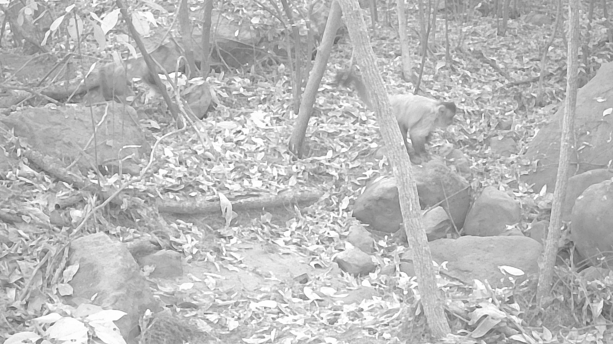
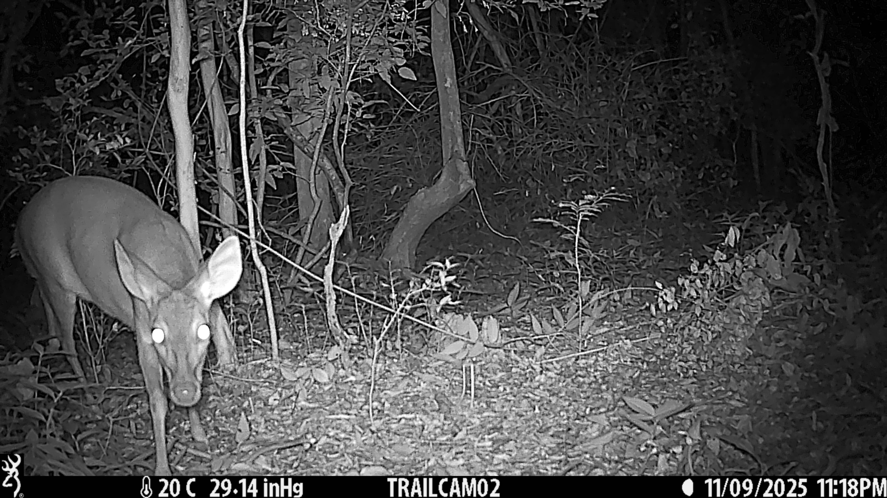

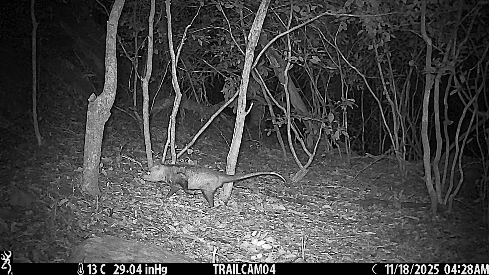
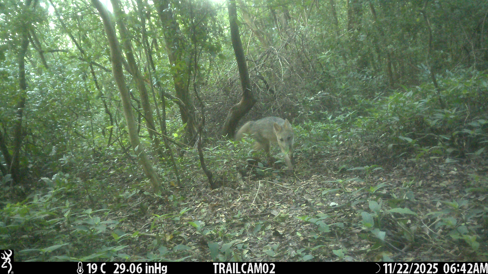
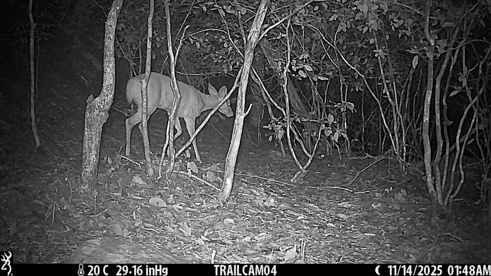
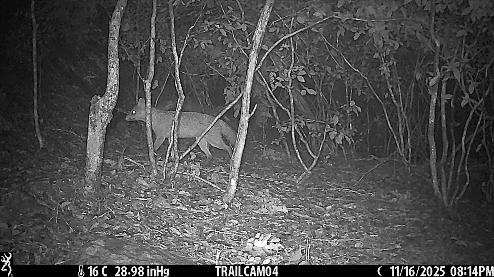
Contacto
📧 Email: snapshotparaguay@ejemplo.org
```{=html}